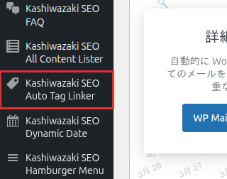

インストール・初期設定
Kashiwazaki SEO Auto Tag Linker のインストール方法と、自動タグリンクに必要な基本設定を説明します。
インストール手順
WordPress管理画面から プラグイン > 新規追加 に移動し、「Kashiwazaki SEO Auto Tag Linker」を検索します。または、プラグインのZIPファイルを プラグイン > 新規追加 > プラグインのアップロード からアップロードします。
「今すぐインストール」をクリックし、インストール完了後「有効化」をクリックします。
管理画面の左メニューに「Kashiwazaki SEO Auto Tag Linker」が追加されます。クリックして設定画面を開きます。

有効化直後から、デフォルト設定でタグの自動リンク変換が開始されます。必要に応じて以下の設定を調整してください。
基本設定
リンク色
自動生成されるタグリンクの文字色をカラーコードで指定します。サイトのデザインに合った色を選択してください。
| 設定項目 | 説明 |
|---|---|
| リンク色 | タグリンクの文字色をHEXカラーコード（例: #0073aa）で指定します。空欄の場合はテーマのデフォルトリンク色が使用されます。 |
| 下線スタイル | リンクに下線を表示するかどうかを設定します。「あり」「なし」から選択できます。 |
リンクスタイルは wp_head にインラインCSSとして出力されます。JavaScriptは使用しないため、Core Web Vitalsに影響を与えません。
対象投稿タイプ
タグの自動リンク変換を適用する投稿タイプを選択します。複数の投稿タイプを同時に有効にできます。
| 投稿タイプ | 説明 |
|---|---|
| 投稿（post） | ブログ記事内のタグを自動リンクに変換します。デフォルトで有効です。 |
| 固定ページ（page） | 固定ページ内のタグを自動リンクに変換します。 |
| カスタム投稿タイプ | 登録されているカスタム投稿タイプが一覧表示されます。必要なものを選択してください。 |
最大リンク数
1つの投稿内に自動生成するタグリンクの最大数を設定します。過剰なリンクはユーザー体験を損ない、SEOにもマイナスの影響を与える可能性があるため、適切な数値に設定してください。
最大リンク数を「0」に設定すると、すべてのタグリンク変換が無効になります。制限なしにする場合は十分に大きな数値を設定してください。
最小文字数
リンクに変換するタグの最小文字数を設定します。短すぎるタグ（例: 1〜2文字のタグ）がリンクに変換されることを防ぎ、意味のあるリンクのみを生成します。
| 推奨値 | 説明 |
|---|---|
| 2文字 | 日本語サイトでの推奨値。「AI」「UI」など2文字のタグもリンク対象になります。 |
| 3文字 | 英語サイトでの推奨値。短い一般的な単語のリンク化を防ぎます。 |